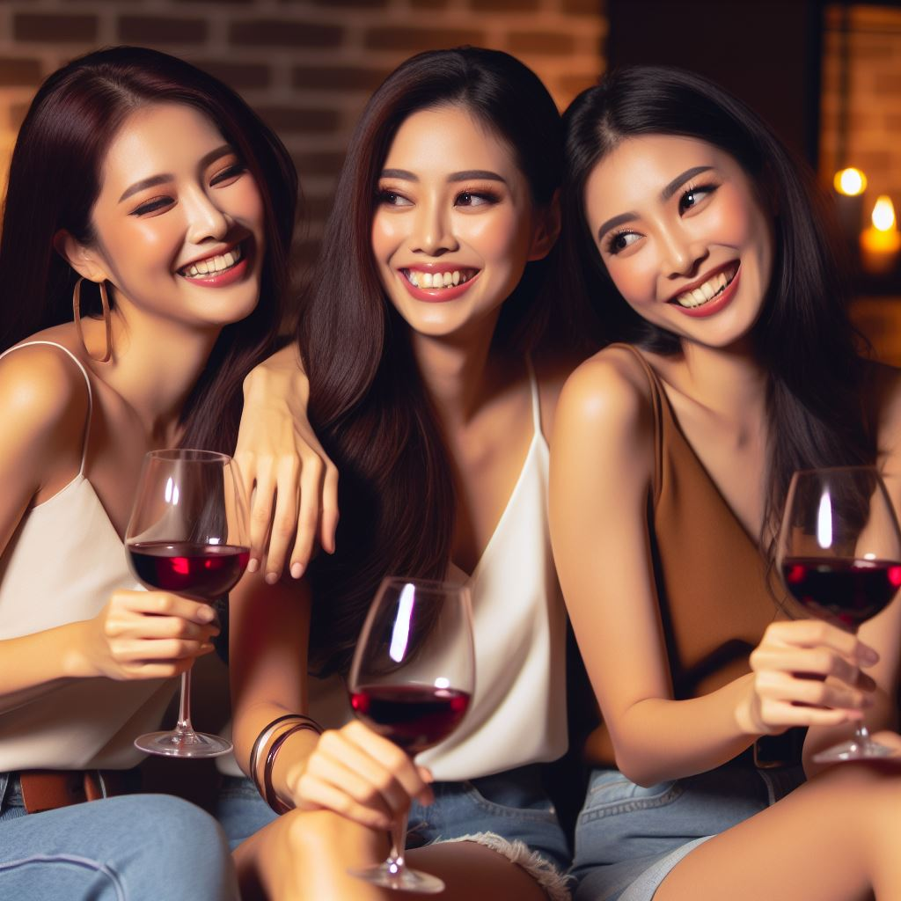
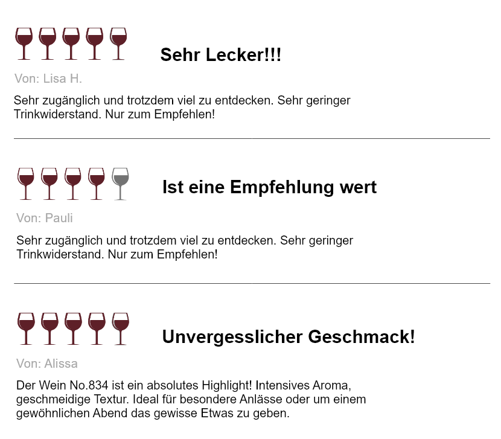
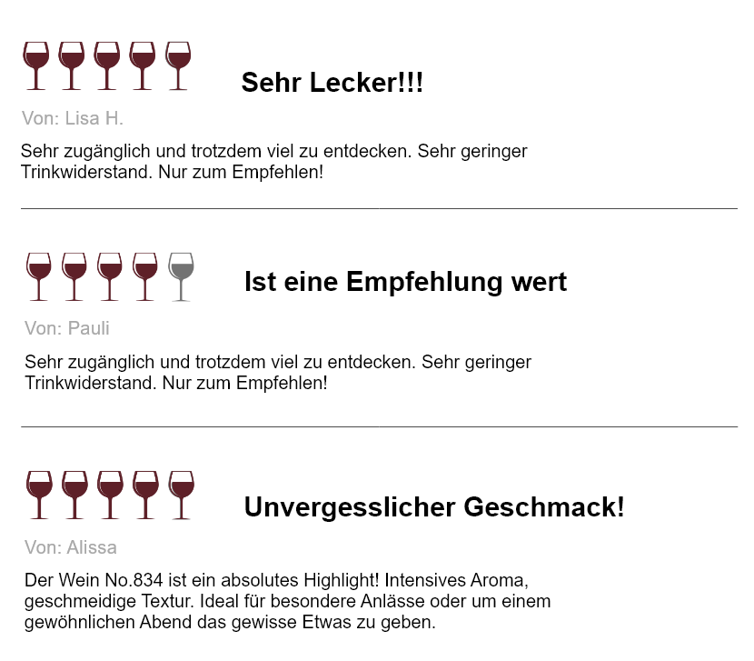

WEIN No.834
Entdecke Wein No. 834 - die perfekte Begleitung für deine tollen Abende und genussvollen
Momente!
Mit seiner ausgewogenen Traubenmischung bietet No. 834 ein einzigartiges Geschmackserlebnis aus
fruchtigen Aromen und subtiler Würze.
Sie finden Wein Mucho Gusto, deswegen holen sie sich schnell unseren Wein.
Ob mit Freunden oder allein, dieser Wein passt zu jedem Anlass, denn Wein No.834 der muss sein!

 

WEINTAG
Kontaktiere uns, bei weiteren Fragen